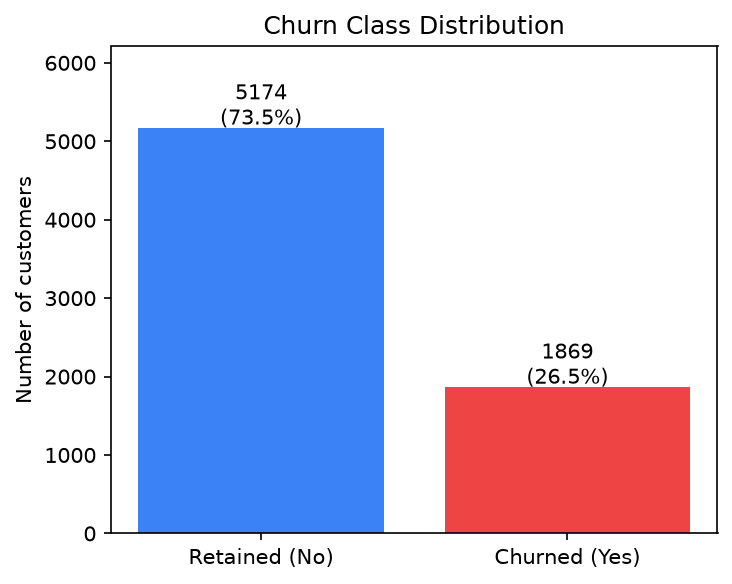
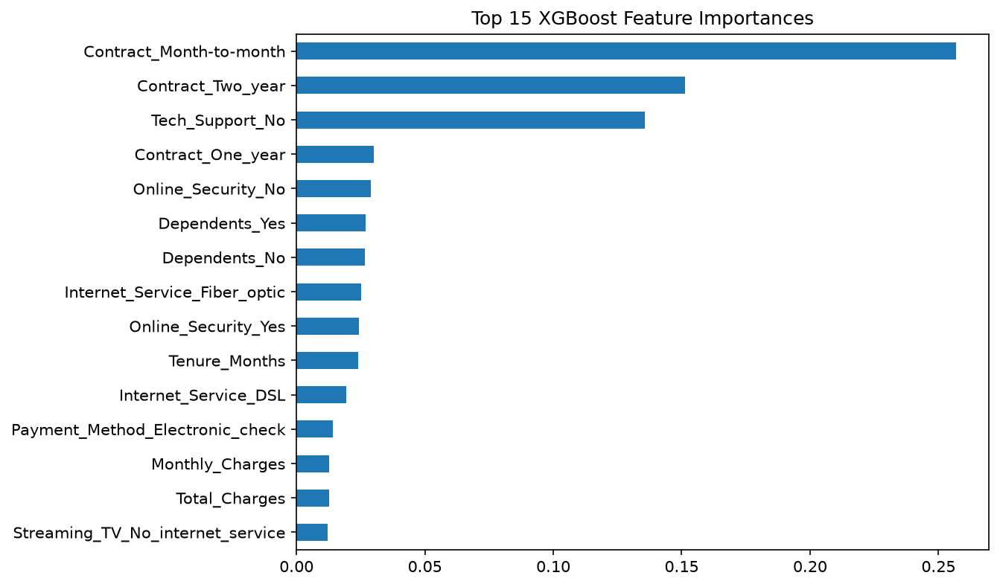
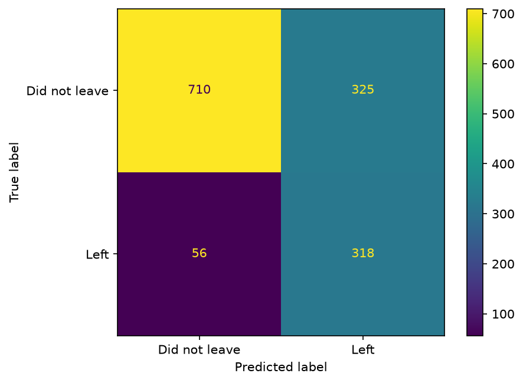

Type
Supervised binary classifiers. Logistic regression is a linear baseline. Random forest and XGBoost are tree ensembles; XGBoost was selected as the frozen deployment model.
Student Symposium · Machine Learning Case Study
A machine learning project that predicts which telecom customers are likely to churn, so a company can try to retain them before they cancel.
Customer churn is a major cost for subscription businesses. A company loses recurring revenue and the cost of acquiring that customer. Flagging people who are likely to leave makes it possible to intervene with a retention offer or outreach call.
Research question: Can a machine learning classifier trained on Telco customer account and service-usage data reliably distinguish churners from non-churners, and which features are the strongest predictors of churn?
The models are trained on the IBM Telco Customer Churn dataset
(WA_Fn-UseC_-Telco-Customer-Churn.csv): 7,043 customers,
of whom about 26.5% churned. Because churners are the minority class,
the team optimized for more than raw accuracy and tracked recall on
churners alongside precision, F1, and ROC-AUC.
All three models solve the same binary classification problem: will this customer churn, or stay?
Supervised binary classifiers. Logistic regression is a linear baseline. Random forest and XGBoost are tree ensembles; XGBoost was selected as the frozen deployment model.
Engineered account and service-usage features, including contract
type, tech support, online security, dependents, internet service,
tenure, monthly charges, total charges, and related fields shown
in the feature-importance figure. The raw table also includes
demographic attributes (Gender,
Senior_Citizen, Partner,
Dependents).
A churn probability for each customer and a stay/leave decision after a chosen threshold. The frozen XGBoost artifact is what a Streamlit app would use to estimate churn risk.
We compared three classifiers on the same stratified test customers. XGBoost catches about 78% of churners, versus 53% for logistic regression and 45% for random forest. It also ranks risk more accurately (0.63 average precision) and separates classes more clearly (0.83 ROC-AUC). We picked XGBoost because missing a leaver costs a lost customer, so a model that catches more of them is worth more than one that is only marginally more precise.
| Metric | XGBoost | Logistic regression | Random forest |
|---|---|---|---|
| Leavers caught (recall) | 78% | 53% | 45% |
| Ranks risk correctly (avg. precision) | 0.63 | 0.60 | 0.57 |
| Overall score (ROC-AUC) | 0.83 | 0.82 | 0.81 |
Click a legend item to show or hide a metric. Hover a bar for the exact value. Average precision and ROC-AUC are plotted on a 0–100 scale (value × 100) so they can sit beside recall.


Contract_Month-to-month,
Contract_Two_year, and
Tech_Support_No rank highest and account for over 50%
of XGBoost feature importances. Contract type contributes more than
any other factor: month-to-month customers are more likely to churn,
while two-year contract holders are far less likely to. Next are
one-year contracts, no online security, dependents, fiber-optic
internet, and tenure. Lacking security, having no dependents, and
shorter tenure also raise churn risk.

Used as intended, the model helps a business prioritize retention actions—an offer or an outreach call—for customers flagged as high-risk. Catching a churner who would otherwise leave protects recurring revenue and avoids re-acquisition cost.
A false negative is a churner the model misses: a lost customer the company never tries to keep. A false positive is a loyal customer flagged as at-risk: unnecessary outreach or a discount given to someone who would have stayed. The team treated false negatives as more expensive, so higher recall was chosen over higher precision. That choice increases outreach volume and can annoy or discount customers who were not going to leave.
The feature set includes demographic attributes
(Gender, Senior_Citizen,
Partner, Dependents). Because these
correlate with regulated or protected characteristics, using them to
decide who gets a discount or a retention call can
amplify bias through disparate treatment—for
example, systematically offering different terms by age or family
status.
ML can mitigate bias in this case study if those attributes are reviewed or excluded before any real deployment, if error rates are checked across groups, and if the score is treated as a probability for prioritizing outreach rather than a verdict about an individual. Equalized-odds style constraints and age-bias-aware modeling are the kinds of safeguards this setting would need before production use.
The dataset is a single historical snapshot from one provider (7,043 customers), so performance may not generalize to other companies, regions, or time periods. The model is a frozen artifact with no drift monitoring or retraining pipeline. It is a project demonstration, not a production retention system.
IBM Telco Customer Churn dataset
(WA_Fn-UseC_-Telco-Customer-Churn.csv).
Kaggle: blastchar/telco-customer-churn.
github.com/abdonkath/netflix-churn-predictor — notebooks, frozen model artifacts, and project documentation.
pandas, NumPy, scikit-learn, XGBoost, matplotlib, seaborn, Streamlit.
The current model predicts who will churn, not who can be saved. Uplift modeling (for example a T-learner or X-learner) would split customers into four groups: sure things (staying regardless), lost causes (leaving regardless), persuadables (retained because of the offer—the real target), and sleeping dogs (customers who churn because they were contacted). Outreach could then target only persuadables instead of the whole high-risk group.
We currently output a single churn probability with no sense of timing. Using tenure in a Cox proportional hazards or Kaplan–Meier model would estimate when a customer is likely to churn (for example, “40% risk within the next 3 months”), giving retention teams a timing signal instead of a static score.
Beyond single-feature importances, SHAP interaction values could surface which feature combinations (for example month-to-month contract + fiber optic + electronic check) drive the highest risk, turning the feature-importance chart into named at-risk customer personas that retention teams could design specific offers around.